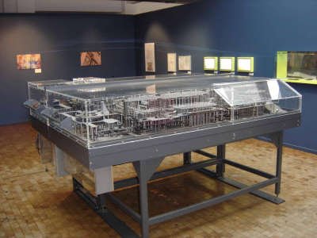
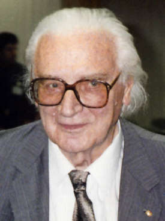

Z1- механическое вычислительное устройство, созданное в 1938 году, стало первой ограниченно программируемой вычислительной машиной немецкого инженера Конрада Цузе. Это двоичная вычислительная машина с вводом данных с помощью клавиатуры, в десятичной системе исчисления в виде чисел с плавающей запятой. Главным отличием от более известной вычислительной машины Z3 (1941 год) было отсутствие вычисления квадратного корня.
Перейдя в 1936 году на работу с полной ставки на полставки, оставаясь в должности инженера-прочниста на авиационной фабрике Хейнкеля, на которой он работал с 1935 г., Цузе в течение двух лет на собственные средства и деньги, занятые у друзей, выполнял разработку и сборку спроектированного им устройства. Законченная машина размещалась на нескольких сдвинутых вместе столах в гостиной родительского дома и занимала около 4 м² её площади. Вес устройства достигал 500 кг.
Z1 работал ненадёжно из-за недостаточной точности исполнения составных частей. Для выполнения расчётов в практическом применении машина не использовалась. Тем не менее, Цузе был удовлетворён работой своего детища. Именно на основе Z1 им были в дальнейшем разработаны другие программируемые машины Z2, Z3, Z4 и т. д.
Доктор Ко́нрад Эрнст О́тто Цу́зе родился 22 июня 1910, Берлин, Германская империя — 18 декабря 1995, Хюнфельд — немецкий инженер, пионер компьютеростроения. Также известен благодаря , созданию первого языка программирования высокого уровня в 1948 году
